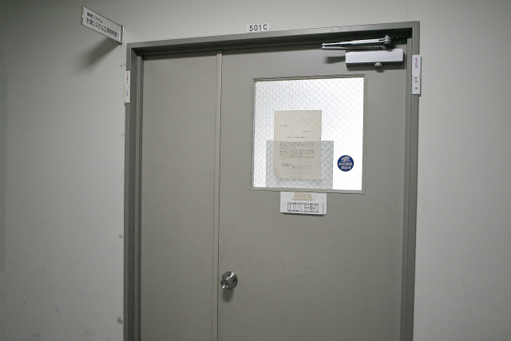
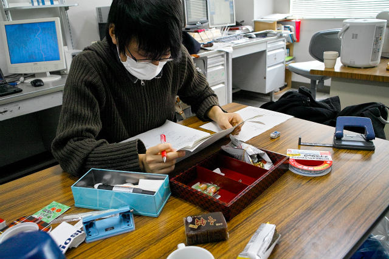
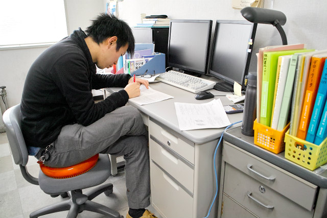
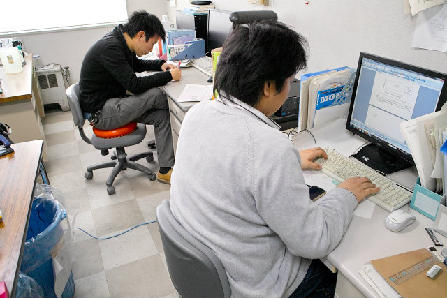
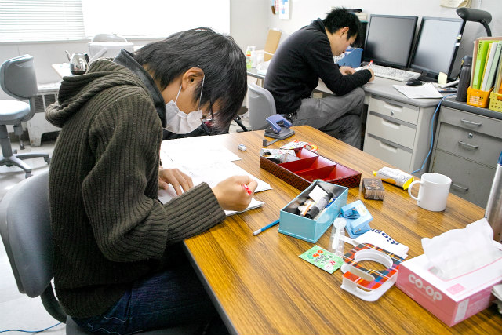
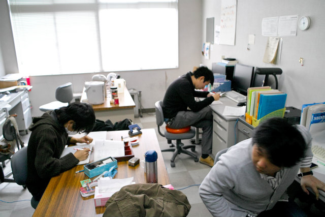
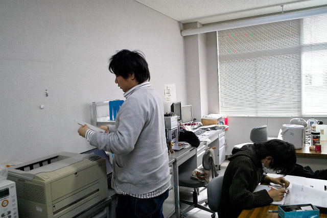
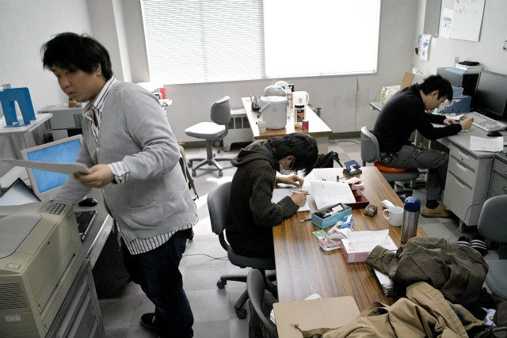

| ・ 論文校正 (H26.02.07) | |||
修士論文の提出は来週の水曜日と迫ってきました。現状はだいたい完成した原稿が出てきたところです。今日、金曜日はお互いの原稿を交換して校正する日。自分の原稿を他のM2に校正してもらう流れです。なぜだか他人の間違いだけは良く気が付きます。 |
|||
|

M2部屋は絶賛校正中 |

I上くんの原稿を校正中のK井くん | ||
|

K井くんの原稿を校正中のI上くん |

まだ書いてるE川くん | ||
|

お互い校正中 |

乗るしかない このビッグウェーブに | ||
|

古いOKIが活躍 |

アレ、オレのは誰がみるん？ | ||